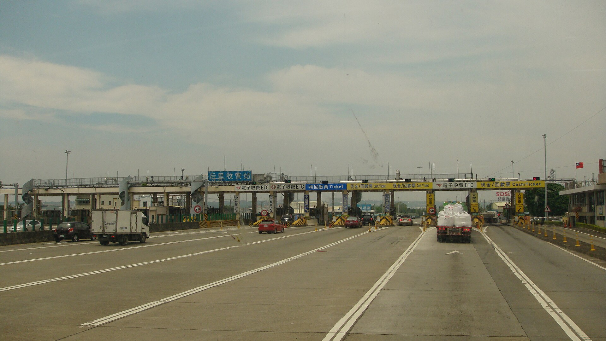

國道沒有收費站了，你的通行費是誰在算？
門架辨認的是一次通過，帳單結算的是一整天；這兩者之間，藏著電子收費真正的工程。
車子穿過國道門架，沒有閘門，沒有找零，駕駛甚至不必抬頭。但那一瞬間，系統得分清楚幾件事：有車通過、它是哪種車、是哪個車號、eTag 是否與它對得上，以及這筆資料該如何進入當天帳單。看似只是「感應扣款」，其實把現場辨識與後端計價拆開了。若只看門架上的攝影機，就會漏掉其中最重要的一半。

一、收費站消失，收費的單位也換了
台灣國道電子收費在 2006 年先以計次模式上路，車輛仍要經過收費站；2013 年 12 月 30 日轉為全面計程後，原先收費站由門架系統接手。這段時間線來自營運商遠通電收的歷史資料[3]。技術更換的不只是付錢方式，也改變了費用如何和行駛路段相連。
計次收費以通過站點作為收費事件：有些旅程可能開很遠卻少經過站，有些較短的旅程卻跨過站。計程門架設在路網中，把車輛通過的位置轉成可計價紀錄。這不表示每輛車隨時被 GPS 記下精確里程；系統靠固定位置的通過事件，依既定規則計費。
二、同一輛車，要讓好幾種感測互相對上
高公局的架構頁列出偵測、扣款、車輛辨識、執法及車牌辨識模組[2]。交通部的國道收費歷史展示把順序說得更具體：感知器察覺車輛並判別車型，系統拍攝車牌，RFID 區域讀取 eTag，再將同一輛車的資料匹配成交易紀錄，送往後端帳務[7]。
因此，「eTag 被讀到」與「一筆正確通行紀錄成立」不是完全相同的事。還得把讀值和那輛實際通過的車對上。多種模組不是多此一舉，而是在高速、連續的車流裡，把車型、標籤及車號連起來；沒有裝 eTag 的車，也不會因為少了貼紙就失去收費依據。
這和一般門禁卡不同。門禁通常一次處理一個靠近讀卡機的人，國道則不能要求車輛停下來配合辨識。現場省下來的等待，換成了感測與資料匹配必須承擔的工作。
三、貼紙沒有電池，讀取也不是衛星定位
高公局 2011 年的 eTag 技術介紹說明，貼紙採 RFID：門架的無線電訊號提供標籤回應所需能量，再讀取識別資訊[4]。這裡應分清楚識別與定位。貼紙回答的是「我是這個標籤」，通過哪個地點則來自固定門架的位置，兩者合起來才形成通行事件。
這種選擇也有採用成本的考量。遠通記載，早期紅外線 OBU 改為 RFID eTag，並透過免費申辦推廣；該公司公布的利用率曾在一年半內由 43.2% 升到 87.7%。這是營運商對自身轉型的敘述，不是可單獨證明免費是唯一原因的因果試驗。能合理說的是：若制度需要大多數車輛使用，使用者如何安裝、付出多少成本，和讀取技術同樣重要。
四、過一座門架，為什麼不是立刻出一張整數帳單？
高公局現行計價頁將計算分成三步：依車號累加當天各門架應收金額；扣抵長途折扣、優惠里程與差別費率；最後才將應繳總額四捨五入到元[1]。高公局 2021 年的國道小學堂也特別提醒，不是把全天里程直接乘上一個費率就結束[8]。
以下只是用來看懂日歸戶的假設算例：同一天，一輛小型車先後行駛 15 公里與 15 公里，假設都在一般標準計價條件，兩段原計費額合計為 36 元；當天 20 公里優惠相當於扣抵 24 元，結果為 12 元。若誤以為每一趟都各送 20 公里，就會把同樣車程錯算成零。這個例子省略實際門架牌價與差別費率，不能拿來取代特定旅程的正式試算。
小型車一般費率為每公里 1.20 元，超過 200 公里部分適用長途折扣；連續假期可能取消優惠里程、另用單一或差別費率。也就是說，辨識完全正確仍不足以得到正確帳單，還必須套用那一天、那種車、那個路段的規則。
五、「正確率」要先問分母是什麼
遠通公布的高精準度容易吸引目光，但高公局稽核資料提供了另一個重要觀念：收費金額正確、可成功收費、通行量正確，是不同指標。2018 年公告的 2017 年度稽核中，抽驗 197 萬輛車通行扣款資料，分別列出收費正確性 100%、可收費成功率 99.994%、通行量正確率 99.95%[6]。
這不代表 2017 年的抽驗能保證 2026 年每一筆都不會錯，也不能把三個指標挑最高的一個，概括為整個系統的永久正確率。它們檢查的是不同環節：有沒有辨認通過、能不能完成收費、算出的金額對不對。將分母及年度寫出來，才看得到哪一種失敗被衡量。
該公告也說明營運商先委託第三方查核，再由高公局稽核，內容包含個資介接及資安。但該份舊年度稽核沒有完整回答今天所有通行資料的保存期間與調閱權限，因此「受稽核」不等於「沒有隱私問題」。少停一次車，並不等於資料應如何使用的問題也自動消失。
六、自由通過之後，還要能回頭查帳
人工收費把交易放在你眼前：交錢、拿票、離開。自由流電子收費把辨識與計價移到背景，便利也因此依賴另一種可見性：用路人能否查到交易、發現不符、提出異議。高公局的稽核說明指向交易與欠費查詢及異常舉報，但具體期限與處理方式仍應以當時正式管道為準。
這套制度的長處，是不必把道路變成逐車結帳的隊伍；代價是我們不能只憑一次感應聲判斷交易完成。門架完成的是一次辨識，日結完成的是一筆帳，稽核與申訴則讓這筆帳有機會被重新檢查。三者接得起來，才是「開過去就好」背後的信任。
查證資料來源8 項
實際支持文中事實主張的來源，逐條標註支持的內容；文內如有 [數字] 標記，對應此處編號。
延伸探討
把故事帶回自己的思考
如果帳單金額看起來不對，你最需要看到哪一層資訊：通過時間與門架、車種辨識、當日優惠如何扣抵，還是異議的處理紀錄？一套不打斷行車的制度，應該把哪些查核能力還給使用者？